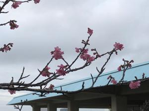
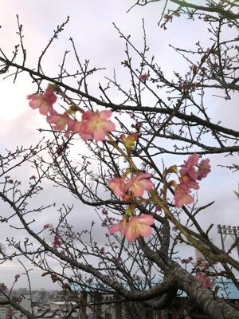
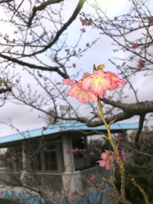

うるがいの話 ある日
最新: 走る気がしない【うるがいの話 ある日】とは 一日だけのプログです
『うるがいの話』の最新一日だけのプログで、通信料が少なく経済的だ。カニの画像をクリックすると全ての日付が載る『うるがいの話』サイトを表示します
|
|
【うるがいの話】 うるがい(ｳﾙｶﾞｲ urugai)とは、『もずくがに』の名前でとても大きくなります。 |
|---|---|
|
|
【カミマヤーの話】 猫のことを方言でマヤーといいます。カミマヤー（kamimayaa）とは、神の猫のことです。 |
|
【たながぁの音楽】 たながぁ（ﾀﾅｶﾞｰ tanagaa）とは手長えびのことで、何種類かあり大きいのは車 エビぐらいになります。 |

|
【ぶながぁの話】 ぶながぁ(ﾌﾞﾅｶﾞｰ bunagaa)とは、赤い髪の毛、赤い身体、そして身長は１ｍ２０ｃｍ ぐらい、川の蟹を食べているの目撃された。場所は沖縄県国頭郡大宜味村のと ある村僕の隣近所に住んでいる爺さんから、聞いた話です。 |
|
|
【ギーマの話】 ギーマ(giima)とは、山原の里山に咲くスズランに似た、 花を付けます。実は食べられます、 気が付くと口の周りが紫になっています。 |
2023年01月15日 (日）走る気がしない
16:19

昨日ジョギンギ途中、とある工事現場を見るために走るのを止めた。しばらく
して、走ろうと思ったら、え！、まったく走る気がしない。失速したのと同じ
状態である。何か、工事現場で霊が憑いたかとお経など唱えるがダメだった。
結局、家まで歩いて家に帰る。帰っても何かやる気がおこらない珍しい日だっ
た。今朝、朝食後お腹に痛みが、おそってきた。んん、しばらく痛みを観察す
る、この痛みは尿路結石だ。耐えられない痛みに変わっていき、痛み止めの錠
剤を飲む、効かない、座薬を使う。一時間、痛みを耐える。ヨメをマンション
へ車で送っていく途中、痛みが突如収まっていく。尿路結石の痛みが収まった
り、復活したりする典型的な現象である。マ、いつものように耐えるとする。
予報通り、朝から雨である。体調もいまいちだし明日以降にするかと思ってい
たが、昼間前に雨があがりわずかながら晴れ間がでた。そのタイミングで無事
うがんを行う。雨の時は、みんなどうするのだろうとネットを検索すると
朝8時頃から降りだした雨と、すっごい雷(>_<)
ありゃ？
私、拝みで雨降ることあり得ないんだけども？
神様に
「今日屋敷拝みダメな日？できんの？」
と訪ねると
「できますよ！」
との返事(-_-;)
どんどん雨も雷も強くなるし、ちょいとさすがに
依頼主さんにも、
「雨だと中止ですが、予定の時刻には伺います。」
と伝え、
ベビーシッターさんも予定通りお願いして出発！！
主人も「さすがに今日はムリでしょ？」
と言っていたのですが、
はい。
依頼主さんのお家についた途端、雨が止み
土地神様にお伺いすると、
「雲の隙間から明々とあかがーる太陽で光を射しましょう。
黄金(くがに)の光で和合をとりましょう。
拝みをお願いします」
との返事(^_^)
その途端、雲の隙間から太陽が顔をだし、
かなり！かなーーり眩しい中、屋敷拝みをスタート致しました(*^^*)
ウーン、私は神様と会話は出来ないが、神様が晴れ間をつくったのかも。
 
１６時０９分 ビットコインの総資産 ￥７、６７５（↓７６）